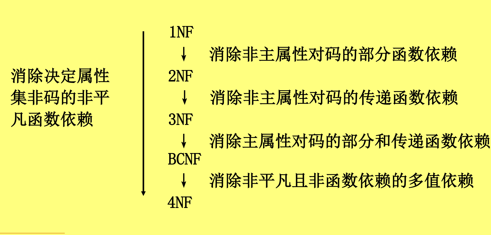
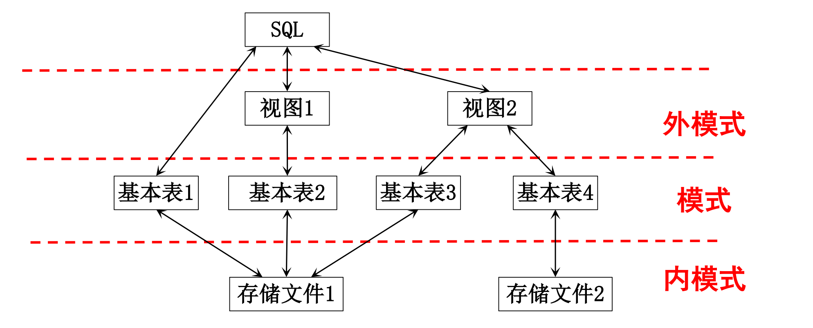
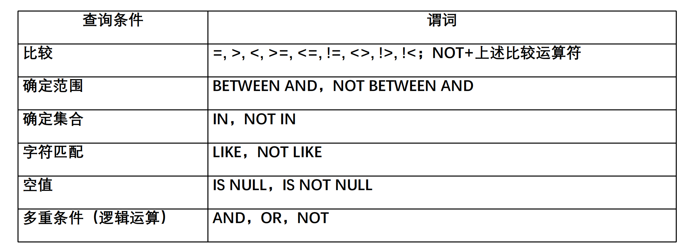

数据库技术：笔记整理
Last updated on April 28, 2026 pm
本文为 SJTU-CS3321 数据库技术课程的笔记整理。
第一章 数据库系统概论
1. 数据库系统概述
1.1 四个基本概念
-
数据 (Data)：数据库中存储的基本对象
- 定义：描述事物的符号记录
- 种类：数值、文字、图形、图象、声音、视频等
- 特点：数据与其语义是不可分的
-
数据库 (DataBase, DB)：
- 定义：长期储存在计算机内、有组织、可共享的大量数据集合
- 基本特征：
- 数据按一定的数据模型组织、描述和储存
- 可为各种用户共享
- 冗余度较小
- 数据独立性较高
- 易扩展
-
数据库管理系统 (DataBase Management System, DBMS)：
- 定义：位于用户与操作系统之间的一层数据管理软件
- 用途：科学地组织和存储数据、高效地获取和维护数据
- 主要功能：
- 数据定义功能：
- 提供数据定义语言(Data Definition Language, DDL)
- 定义数据库中的数据对象的组成与结构
- 数据组织、存储、管理功能：
- 文件结构和存取方式
- 数据如何联系
- 提高存储空间利用率、方便存取
- 数据操纵功能：
- 提供数据操纵语言（Data Manipulation Language, DML）
- 操纵数据实现基本操作，如查询、插入、删除和修改
- 数据库的事务管理和运行管理：
- 保证数据的安全性、完整性
- 多用户对数据的并发使用
- 发生故障后的系统恢复
- 数据库的建立和维护功能：实用程序或管理工具
- 数据库数据批量装载和转储
- 介质故障恢复
- 数据库的重组织
- 性能监视、分析
- 其他功能：
- 数据库管理系统与网络中其它软件系统的通信
- 数据库管理系统各系统之间的数据转换
- 异构数据库之间的互访和互操作
- 数据定义功能：
-
数据库系统 (DataBase System, DBS)：
-
定义：在计算机系统中引入数据库和 DBMS 后的系统构成
- 在不引起混淆的情况下，常常把数据库系统简称为数据库
-
构成：由数据库、数据库管理系统（及其应用开发工具）、应用系统、数据库管理员（DataBase Administrator, DBA）构成
-
结构：

-
1.2 数据库管理技术的产生与发展
-
数据管理技术：
- 定义：对数据进行分类、组织、编码、存储、检索和维护，是数据处理和数据分析的中心问题
- 发展过程：
- 人工管理阶段：40 年代 – 50 年代中
- 文件系统阶段：50 年代末 – 60 年代中
- 数据库系统阶段：60 年代末 – 现在
-
人工管理阶段：40 年代中 – 50 年代中
-
背景：
- 应用背景：计算机主要用于科学计算
- 硬件背景：外存只有磁带、卡片、纸带，没有直接存储设备
- 软件背景：没有操作系统、没有管理数据的软件
- 处理方式：批处理
-
特点：
- 数据不保存，没有文件的概念
- 应用程序管理数据，程序员负担很重
- 数据面向某个应用程序，无共享，冗余度大
- 应用程序与数据的关系：一一对应，数据不具有独立性

-
-
文件系统阶段：50 年代末 – 60 年代中
-
背景：
- 应用需求：科学计算、管理
- 硬件水平：磁盘、磁鼓等存储设备
- 软件水平：有文件系统
- 处理方式：联机实时处理、批处理
-
特点
- 数据的管理者：文件系统，数据可长期保存
- 数据面向的对象：某一应用程序
- 数据的共享程度：共享性差、冗余度极大
- 数据的独立性：独立性差，数据的逻辑结构改变必须修改应用程序
- 数据的结构化：记录内有结构，整体无结构数据
- 控制能力：应用程序自己控制

-
-
数据库系统阶段：60 年代末以来
-
背景：
- 应用需求：大规模管理
- 硬件水平：大容量磁盘、磁盘列阵
- 软件水平：有数据库管理系统
- 处理方式：联机实时处理、分布处理、批处理
-
特点：
- 数据的管理者：DBMS
- 数据面向的对象：现实世界
- 数据的共享程度：共享性高，冗余度小
- 数据的独立性：高度的物理独立性和一定的逻辑独立性
- 数据的结构化：整体结构化，用数据模型来表示
- 控制能力：由 DBMS 统一管理和控制

-
1.3 数据库系统的特点
-
数据的结构化：整体数据的结构化是数据库的主要特征之一
- 数据的结构用数据模型描述，无需程序定义和解释
- 数据可以变长；数据的最小存取单位是数据项
- 不再仅仅针对某一应用，而是面向整个企业或组织
-
数据的独立性：
- 物理独立性：
- 指用户的应用程序与存储在物理磁盘上的数据库中数据是相互独立的
- 当数据的物理存储改变了，应用程序不用改变
- 逻辑独立性：
- 指用户的应用程序与数据库的逻辑结构是相互独立的
- 数据的逻辑结构改变了，用户程序也可以不变
- 物理独立性：
-
数据的高共享性：数据面向整个系统，可以被多个用户、多个应用共享使用
- 好处：
- 降低数据的冗余度，节省存储空间
- 避免数据间的不一致性和不相容性
- 数据库系统弹性大，易于扩充
- 好处：
-
数据由 DBMS 统一管理和控制：
- 数据的安全性（Security）保护：使每个用户只能按指定方式使用和处理指定数据，保护数据以防止不合法的使用造成的数据的泄密和破坏
- 数据的完整性（Integrity）检查：保持数据的正确性、有效性、相容性；将数据控制在有效的范围内，保证数据之间满足一定的关系
- 并发（Concurrency）控制：对多用户的并发操作加以控制和协调，防止相互干扰而得到错误的结果
- 数据库恢复（Recovery）：将数据库从错误状态恢复到某一已知的正确状态
2. 数据模型
- 数据模型：
- 作用：抽象、表示和处理现实世界中的数据和信息
- 通俗地讲数据模型就是现实世界的模拟
- 要求：
- 能比较真实地模拟现实世界
- 容易为人所理解
- 便于在计算机上实现
- 作用：抽象、表示和处理现实世界中的数据和信息
2.1 两类数据模型
-
概念模型：也称信息模型
- 是按用户的观点来对数据和信息建模，用于数据库设计
-
逻辑模型和物理模型：
- 逻辑模型：主要包括网状模型、层次模型、关系模型等，它是按计算机系统的观点对数据建模，用于 DBMS 的实现
- 物理模型：数据最低层的抽象，描述数据在系统内部的表示方式和存取方法，面向计算机系统
2.2 概念模型
-
概念模型：
- 用途：
- 用于信息世界的建模
- 是现实世界到机器世界的一个中间层次
- 是数据库设计的有力工具
- 数据库设计人员和用户之间进行交流的语言
- 基本要求：
- 较强的语义表达能力
- 简单、清晰、易于用户理解
- 用途：
-
信息世界的基本概念：
- 实体（Entity）：客观存在并可相互区别的事物
- 可以是具体的人、事、物或抽象的概念
- 属性（Attribute）：实体所具有的某一特性
- 一个实体可以由若干个属性来刻画
- 码（Key）：唯一标识实体的属性集
- 域（Domain）：属性的取值范围
- 实体型（Entity Type）：同类实体，用实体名及其属性名集合来抽象和刻画
- 实体集（Entity Set）：同型实体的集合
- 联系（Relationship）：现实世界中事物内部以及事物之间的联系，在信息世界中反映为实体内部的联系和实体之间的联系
- 实体（Entity）：客观存在并可相互区别的事物
-
实体之间的联系：
-
联系的度：参与联系的实体型的数目
- 两个实体型之间的联系度为 2，称为二元联系
- 三个实体型之间的联系度为 3，称为三元联系
- N 个实体型之间的联系度为 N，称为 N 元联系
-
两个实体型之间的联系：

-
一对一联系：如果对于实体集 A 中的每一个实体，实体集 B 中至多有一个实体与之联系，反之亦然，则称实体集 A 与实体集 B 具有一对一联系，记为 1:1
- 例如，班级与班长之间的联系：一个班级只有一个正班长，一个班长只在一个班中任职
-
一对多联系：如果对于实体集 A 中的每一个实体，实体集 B 中有 n 个实体（n≥0）与之联系，反之，对于实体集 B 中的每一个实体，实体集 A 中至多只有一个实体与之联系，则称实体集 A 与实体集 B 有一对多联系，记为 1:n
- 例如，班级与学生之间的联系：一个班级中有若干名学生，每个学生只在一个班级中学习
-
多对多联系：记为 m:n
-
-
多个实体型之间的联系：
- 一对多联系：若实体型 存在联系，对于实体型 （）中的给定实体，最多只和 中的一个实体相联系，则我们说 与 之间的联系是一对多的
- 多对多联系
- 一对一联系
-
-
同一实体集内各实体间的联系：
- 一对多联系：例如，职工实体集内部具有领导与被领导的联系，某一职工（干部）“领导”若干名职工一个职工仅被另外一个职工直接领导
- 一对一联系
- 多对多联系
-
概念模型的表示方法：概念模型的表示方法很多
- 实体－联系方法 (Entity-Relationship approach)：
- 用 E-R 图来描述现实世界的概念模型
- 提供了表示实体型、属性和联系的方法
- E-R 方法也称为 E-R 模型
- 实体－联系方法 (Entity-Relationship approach)：
-
E-R 图：
- 实体型：用矩形表示，矩形框内写明实体名
- 属性：用椭圆形表示，并用无向边将其与相应的实体连接起来
- 联系：用菱形表示，菱形框内写明联系名，并用无向边分别与有关实体连接起来，同时在无向边旁标上联系的类型（1:1、1:n 或 m:n）
- 联系的属性：用无向边与该联系连起来
- 联系本身也是一种实体型，也可以有属性
2.3 数据模型的组成要素
-
数据模型的组成要素：
- 数据结构：静态特性
- 数据操作：动态特性
- 数据的完整性约束条件
-
数据结构：对系统静态特性的描述
- 作用：
- 描述数据库的组成对象及对象之间的联系
- 经常用数据结构的类型来命名数据模型，例如：层次结构—层次模型、关系结构—关系模型
- 描述的内容：
- 与对象的类型、内容、性质有关
- 与数据之间联系有关的对象
- 作用：
-
数据操作：对系统动态特性的描述
- 内容：对数据库中各种对象（型）的实例（值）允许执行的操作及有关的操作规则
- 类型：
- 查询
- 更新：包括插入、删除、修改
-
数据的完整性约束条件：一组完整性规则的集合
- 完整性规则：给定的数据模型中数据及其联系所具有的制约和储存规则
- 作用：可以限定符合数据模型的数据库状态以及状态的变化，以保证数据的正确、有效、相容
- 约束条件的定义：
- 反映和规定本数据模型必须遵守的基本的通用的完整性约束条件
- 例如：在关系模型中，任何关系必须满足实体完整性和参照完整性两个条件
- 提供定义完整性约束条件的机制，以反映具体应用所涉及的数据必须遵守的特定的语义约束条件
- 反映和规定本数据模型必须遵守的基本的通用的完整性约束条件
- 完整性规则：给定的数据模型中数据及其联系所具有的制约和储存规则
2.4 常用的数据模型
- 格式化模型：第一代数据库
- 层次模型 (Hierarchical Model)
- 网状模型 (Network Model)
- 数据结构：以基本层次联系为基本单位
- 关系模型 (Relational Model)：第二代数据库
- 数据结构：表
- 新一代数据库：
- 面向对象模型 (Object Oriented Data Model)
- 对象关系模型 (Object Relational Model)
- 半结构化数据模型 (Semi-structure Data Model)
- 非结构化数据模型
- 图模型
- 其他
2.5 层次模型
- 数据结构
- 几个术语:
- 双亲结点，子女结点
- 根结点，叶结点
- 兄弟结点
- 要求：满足下面两个条件的基本层次联系的集合为层次模型：
- 有且只有一个结点没有双亲结点，这个结点称为根结点
- 根以外的其它结点有且只有一个双亲结点
- 表示方法：
- 实体型：用记录类型描述，每个结点表示一个记录类型
- 属性：用字段描述，每个记录类型可包含若干个字段
- 联系：用结点之间的连线（有向边）表示记录（类型）之间的一对多的父子联系
- 特点：
- 结点的双亲是唯一的
- 只能直接处理一对多的实体联系
- 每个记录类型定义一个排序字段，也称为码字段
- 任何记录值只有按其路径查看时，才能显出它的全部意义
- 没有一个子女记录值能够脱离双亲记录值而独立存在
- 多对多联系的表示：用层次模型间接表示多对多联系
- 方法：将多对多联系分解成一对多联系
- 分解方法：冗余结点法、虚拟结点法
- 几个术语:

-
数据操纵：查询、插入、删除、更新
-
完整性约束：
- 无相应的双亲结点值就不能插入子女结点值
- 如果删除双亲结点值，则相应的子女结点值也被同时删除
- 更新操作时，应更新所有相应记录，以保证数据的一致性
-
优点：
- 层次数据模型简单，对具有一对多的层次关系的部门描述自然、直观，容易理解
- 查询效率高，性能优于关系模型，不低于网状模型
- 层次数据模型提供了良好的完整性支持
-
缺点：
- 多对多联系表示不自然
- 对插入和删除操作的限制多
- 查询子女结点必须通过双亲结点
- 查询及更新操作必须给出完整路径
2.6 网状模型
- 数据结构：
- 要求：满足下面两个条件的基本层次联系的集合为网状模型：
- 允许一个以上的结点无双亲
- 一个结点可以有多于一个的双亲
- 表示方法：与层次数据模型相同
- 实体型：用记录类型描述，每个结点表示一个记录类型
- 属性：用字段描述，每个记录类型可包含若干个字段。
- 联系：用结点之间的连线表示记录（类）型之间的一对多的父子联系
- 与层次模型的区别：
- 网状模型允许多个结点没有双亲结点，允许一个结点有多个双亲结点
- 网状模型允许两个结点之间有多种联系（复合联系）
- 网状模型可以更直接地去描述现实世界
- 层次模型实际上是网状模型的一个特例
- 多对多联系的表示：用网状模型间接表示多对多联系；
- 方法：将多对多联系直接分解成一对多联系
- 要求：满足下面两个条件的基本层次联系的集合为网状模型：

-
数据操纵：查询、插入、删除、更新
-
完整性约束：网状数据库系统（如 DBTG）对数据操纵加了一些限制，提供了一定的完整性约束
- 支持记录码的概念（唯一标识记录的数据项集合）
- 双亲结点与子女结点之间是一对多联系
- 可以支持属籍类别：
- 加入类别：双亲记录在，子女记录才可以加入
- 移出类别：双亲记录删除，子女记录删除
-
优点：
- 能够更为直接地描述现实世界，如一个结点可以有多个双亲
- 具有良好的性能，存取效率较高
-
缺点：
- 结构比较复杂，而且随着应用环境的扩大，数据库的结构就变得越来越复杂，不利于最终用户掌握；
- DDL、DML 语言复杂，用户不容易使用
2.7 关系模型
-
数据结构：在用户观点下，关系模型中数据的逻辑结构是一张二维表，它由行和列组成
- 基本概念：
- 关系（Relation）：一个关系对应通常说的一张表
- 元组（Tuple）：表中的一行即为一个元组
- 属性（Attribute）：表中的一列即为一个属性，给每一个属性起一个名称即属性名
- 主码（Key）：表中的某个属性组，它可以唯一确定一个元组
- 域（Domain）：属性的取值范围来自某个域
- 分量：元组中的一个属性值
- 关系模式：对关系的描述
- 表示方法：
- 实体型：直接用关系（表）表示
- 属性：用属性名表示
- 例：学生（学号，姓名，年龄，性别，系号，年级）
- 一对一联系：隐含在实体对应的关系中
- 例：班级（班级号，班级人数，班长学号）
- 一对多联系：隐含在实体对应的关系中
- 多对多联系：直接用关系表示
- 例：选修（学号，课程号，成绩）
- 规范条件：关系必须是规范化的，满足一定的规范条件
- 最基本的规范条件：关系的每一个分量必须是一个不可分的数据项（不允许表中还有表）
- 基本概念：
-
数据操纵：查询、插入、删除、更新
- 数据操作是集合操作，操作对象和操作结果都是关系，即若干元组的集合
- 存取路径对用户隐蔽，用户只要指出“干什么”，不必详细说明“怎么干”
-
完整性约束：
- 实体完整性
- 参照完整性
- 用户定义的完整性
-
存储结构：实体及实体间的联系用表来表示，表以文件形式存储
- 有的 DBMS 一个表对应一个操作系统文件
- 有的 DBMS 自己设计文件结构
-
优点：
- 建立在严格的数学概念的基础上
- 概念单一，数据结构简单、清晰，用户易懂易用
- 实体和各类联系都用关系来表示
- 对数据的检索结果也是关系
- 关系模型的存取路径对用户透明
- 具有更高的数据独立性，更好的安全保密性
- 简化了程序员的工作和数据库开发建立的工作
-
缺点：
- 存取路径对用户隐蔽，导致查询效率往往不如格式化数据模型
- 为提高性能，必须对用户的查询请求进行优化，增加了开发数据库管理系统的难度
3. 数据库系统结构
- 数据库系统的结构：
- 从数据库应用开发人员角度：
- 数据库采用三级模式结构，是数据库系统内部的系统结构
- 从数据库最终用户角度：
- 单用户结构
- 主从式结构
- 分布式结构
- 客户—服务器
- 浏览器—应用服务器/数据库服务器
- 从数据库应用开发人员角度：
3.1 数据库系统模式的概念
-
“型” 和“值” 的概念：
- 型（Type）：对某一类数据的结构和属性的说明
- 值（Value）：型的一个具体赋值
-
模式（Schema）：
- 数据库逻辑结构和特征的描述
- 是型的描述
- 反映的是数据的结构及其联系
- 模式是相对稳定的
-
模式的一个实例（Instance）：
- 模式的一个具体值
- 反映数据库某一时刻的状态
- 同一个模式可以有很多实例
- 实例随数据库中的数据的更新而变动
3.2 数据库系统的三级模式结构

-
模式（Schema）：也称逻辑模式
- 数据库中全体数据的逻辑结构和特征的描述
- 所有用户的公共数据视图，综合了所有用户的需求
- 特点：一个应用数据库只有一个模式，以数据模型为基础
- 地位：是数据库系统模式结构的中心
- 与数据的物理存储细节和硬件环境无关
- 与具体的应用程序、开发工具及高级程序设计语言无关
- 定义：模式 DDL，模式描述语言
- 定义数据的逻辑结构（数据项的名字、类型、取值范围等）
- 定义数据之间的联系
- 定义与数据有关的安全性、完整性要求
-
外模式（External Schema）：也称子模式或用户模式
- 数据库用户（包括应用程序员和最终用户）使用的局部数据的逻辑结构和特征的描述
- 数据库用户的数据视图，是与某一应用有关的数据的逻辑表示
- 地位：介于模式与应用之间
- 模式与外模式的关系：一对多
- 外模式通常是模式的子集；
- 一个数据库可以有多个外模式，反映了不同的用户的应用需求、看待数据的方式、对数据保密的要求
- 对模式中同一数据，在外模式中的结构、类型、长度、保密级别等都可以不同
- 外模式与应用的关系：一对多
- 同一外模式也可以为某一用户的多个应用系统所使用
- 但一个应用程序只能使用一个外模式
- 模式与外模式的关系：一对多
- 用途：
- 保证数据库安全性的一个有力措施
- 每个用户只能看见和访问所对应的外模式中的数据，简化用户视图
-
内模式（Internal Schema）：也称存储模式
- 是数据物理结构和存储方式的描述
- 是数据在数据库内部的表示方式
- 记录的存储方式（堆存储，聚簇存储，属性升降存储）
- 索引的组织方式（按照 B+ 树索引，按 hash 索引）
- 数据是否压缩存储
- 数据是否加密
- 数据存储记录结构的规定（定长，变长）
- 一个数据库只有一个内模式
3.3 数据库的二级映像功能与数据独立性
-
三级模式与二级映象：
- 三级模式：对数据的三个抽象级别
- 二级映象：在 DBMS 内部实现这三个抽象层次的联系和转换
- 外模式/模式映像
- 模式/内模式映像
-
外模式／模式映象：定义外模式（局部逻辑结构）与模式（全局逻辑结构）之间的对应关系
- 每一个外模式都对应一个外模式／模式映象
- 映象定义通常包含在各自外模式的描述中
- 用途：保证数据的逻辑独立性
- 当模式改变时，数据库管理员修改有关的外模式／模式映象，使外模式保持不变
- 应用程序是依据数据的外模式编写的，从而应用程序不必修改，保证了数据与程序的逻辑独立性，简称数据的逻辑独立性
-
模式／内模式映象：定义数据全局逻辑结构与存储结构之间的对应
关系（例如，说明某个逻辑记录和字段在内部是如何表示的）- 数据库中模式／内模式映象是唯一的
- 该映象定义通常包含在模式描述中
- 用途：保证数据的物理独立性
- 当数据库的存储结构改变了（例如选用了另一种存储结构），数据库管理员修改模式／内模式映象，使模式保持不变
- 应用程序不受影响，保证了数据与程序的物理独立性，简称数据的物理独立性
4. 数据库系统的组成
-
数据库系统的组成：数据库、数据库管理系统（及其开发工具）、应用系统、数据库管理员、（用户）
-
硬件平台及数据库：数据库系统对硬件资源的要求
- 足够大的内存：操作系统、DBMS 的核心模块、数据缓冲区、应用程序、内存数据库
- 足够大的外存：
- 磁盘：操作系统、DBMS、应用程序、数据库及其备份
- 光盘、磁带、软盘：数据备份
- 较高的通道能力：提高数据传送率
-
软件：
- DBMS（数据库管理系统）
- 操作系统
- 与数据库接口的高级语言及其编译系统
- 以 DBMS 为核心的应用开发工具
- 为特定应用环境开发的数据库应用系统
-
人员：
-
数据库管理员 (DBA)：
- 确定数据库中的信息内容和结构
- 决定数据库的存储结构和存取策略
- 定义数据的安全性要求和完整性约束条件
- 监控数据库的使用和运行
- 周期性转储数据库（数据文件、日志文件）
- 系统故障恢复
- 介质故障恢复
- 监视审计文件
- 数据库的改进和重组
- 性能监控和调优
- 定期对数据库进行重组，提高系统性能
- 数据库重构（需求增加或改变）
-
系统分析员：
- 负责应用系统的需求分析和规范说明
- 与用户及 DBA 协商，确定系统的硬软件配置
- 参与数据库系统的概要设计
-
数据库设计人员：
- 参加用户需求调查和系统分析
- 确定数据库中的数据
- 设计数据库各级模式
-
应用程序员：
- 设计和编写应用系统的程序模块
- 进行调试和安装
-
用户：
- 偶然用户：
- 不经常访问数据库，每次访问需要不同数据库信息
- 企业或组织机构的高中级管理人员
- 简单用户：
- 主要工作是查询和更新数据库
- 银行的职员、机票预定人员、旅馆总台服务员
- 复杂用户：
- 工程师、科学家、经济学家、科技工作者等
- 直接使用数据库语言访问数据库，甚至能够基于数据库管理系统的 API 编制自己的应用程序
- 偶然用户：
-
第二章 关系模型和关系运算理论
1. 关系模型概述
-
关系模型简述：
- 历史：
- 系统而严格地提出关系模型的是美国 IBM 公司的 E.F.Codd
- 80 年代后，关系数据库系统成为最重要、最流行的数据库系统
- 关系数据库应用数学方法来处理数据库中的数据
- 典型实验系统：System R、University INGRES
- 典型商用系统：ORACLE、SYBASE、INFORMIX、DB2、INGRES
- 历史：
-
关系数据库系统：支持关系模型的数据库系统
-
关系模型的组成：关系数据结构、关系操作集合、关系完整性约束
-
关系数据结构：
- 单一的数据结构：现实世界的实体以及实体间的各种联系均用关系来表示
- 数据的逻辑结构：从用户角度，关系模型中数据的逻辑结构是一张二维表
-
关系操作集合：
- 常用的关系操作：
- 查询：选择、投影、连接、除、并、交、差
- 数据更新：插入、删除、修改
- 查询的表达能力是其中最主要的部分
- 常用的关系操作：
-
关系的三类完整性约束：
- 实体完整性：通常由关系系统自动支持
- 参照完整性：早期系统不支持，目前大型系统能自动支持
- 用户定义的完整性：
- 反映应用领域需要遵循的约束条件，体现了具体领域中的语义约束
- 用户定义后由系统支持
2. 关系数据结构
关系模型建立在集合代数的基础上。
2.1 关系
-
域（Domain）：一组具有相同数据类型的值的集合
- 整数、实数、介于某个取值范围的整数
- 长度指定长度的字符串集合、{‘男’，‘女’}、介于某个取值范围的日期
-
笛卡儿积（Cartesian Product）：域上的一种集合运算
- 笛卡儿积：给定一组域 （这些域中可以有相同的），其笛卡儿积为：
- 含义：所有域的所有取值的一个组合，不能重复
- 基数（Cardinal number）：若 为有限集，其基数为 ，则 的基数 为：
- 笛卡儿积的表示方法：可表示为一个二维表，表中的每行对应一个元组，表中的每列对应一个域
- 笛卡儿积：给定一组域 （这些域中可以有相同的），其笛卡儿积为：
-
关系（Relation）：
- 关系： 的子集叫作在域 上的关系，表示为
- ：关系名；：关系的目或度（Degree）
- 元组：关系中的每个元素是关系中的元组，通常用 表示
- 单元关系与二元关系：
- 当 时，称该关系为单元关系（Unary relation）
- 当 时，称该关系为二元关系（Binary relation）
- 关系的表示：也是一个二维表，表的每行对应一个元组，表的每列对应一个域
- 属性：关系中不同列可以对应相同的域，为了加以区分，必须对每列起一个名字，称为属性（Attribute）
- 目关系必有 个属性
- 码：
- 候选码（Candidate key）：若关系中的某一属性组的值能唯一地标识一个元组，而其子集不能，则称该属性组为候选码；在最简单的情况下，候选码只包含一个属性
- 全码（All-key）：在最极端的情况下，关系模式的所有属性组是这个关系模式的候选码，称为全码（All-key）
- 主码（Primary key）：
- 若一个关系有多个候选码，则选定其中一个为主码
- 候选码的诸属性称为主属性（Prime attribute）
- 不包含在任何侯选码中的属性称为非主属性（Non-key attribute）
- 三类关系：
- 基本关系（基本表或基表）：实际存在的表，是实际存储数据的逻辑表示
- 查询表：查询结果对应的表
- 视图表：由基本表或其他视图表导出的表，是虚表，不对应实际存储的数据
- 注意：
- 关系是笛卡儿积的有限子集，无限关系在数据库系统中是无意义的
- 笛卡儿积不满足交换律，但关系作为关系数据模型的数据结构，满足交换律，因为为关系的每个列附加一个属性名可以取消关系元组的有序性
- 关系： 的子集叫作在域 上的关系，表示为
-
基本关系的性质：
- 列是同质的（Homogeneous）：每一列中的分量是同一类型的数据，来自同一个域
- 不同的列可出自同一个域：其中的每一列称为一个属性不同的属性要给予不同的属性名
- 列的顺序无所谓：列的次序可以任意交换
- 任意两个元组的候选码不能完全相同：由笛卡儿积的性质决定
- 行的顺序无所谓：行的次序可以任意交换
- 分量必须取原子值：每一个分量都必须是不可分的数据项，这是规范条件中最基本的一条
2.2 关系模式
-
关系模式（Relation Schema）：
- 关系模式是型，关系是值
- 关系模式是对关系的描述
- 元组集合的结构：属性构成、属性来自的域、属性与域之间的映象关系
- 元组语义以及完整性约束条件
- 属性间的数据依赖关系集合
-
定义关系模式：
- 关系模式可以形式化地表示为
- ：关系名
- ：组成该关系的属性名集合
- ：属性组 中属性所来自的域
- ：属性向域的映象集合
- ：属性间的数据依赖关系集合
- 通常可以简记为 或
- ：关系名
- ：属性名
- 域名及属性向域的映象常常直接说明为属性的类型、长度
- 关系模式可以形式化地表示为
-
关系模式与关系：
- 关系模式：
- 对关系的描述;
- 静态的、稳定的
- 关系：
- 关系模式在某一时刻的状态或内容
- 动态的、随时间不断变化的
- 关系模式和关系往往统称为关系，通过上下文加以区别
- 关系模式：
2.3 关系数据库
-
关系数据库：在一个给定的应用领域中，所有实体及实体之间联系的关系的集合构成一个关系数据库
-
关系数据库的型与值：关系数据库也有型和值之分
- 关系数据库的型：称为关系数据库模式，是对关系数据库的描述
- 若干域的定义
- 在这些域上定义的若干关系模式
- 关系数据库的值：是这些关系模式在某一时刻对应的关系的集合，通常简称为关系数据库
- 关系数据库的型：称为关系数据库模式，是对关系数据库的描述
3. 关系操作
- 常用的关系操作：
- 查询的表达能力是其中最主要的部分
- 查询：选择、投影、连接、除、交、并、差、笛卡儿积
- 数据更新：插入、删除、修改
- 关系操作的特点：集合操作方式，即操作的对象和结果都是集合
- 非关系数据模型的数据操作方式：一次一记录
- 关系数据模型的数据操作方式：一次一集合
- 关系数据语言的种类：
- 关系演算（逻辑方式）：用谓词来表达查询要求
- 元组关系演算语言：
- 谓词变元的基本对象是元组变量
- 典型代表：APLHA, QUEL
- 域关系演算语言：
- 谓词变元的基本对象是域变量；
- 典型代表：QBE
- 元组关系演算语言：
- 关系代数（代数方式）：用对关系的运算来表达查询要求
- 关系代数语言：
- 用对关系的运算来表达查询要求
- 典型代表：ISBL
- 具有关系代数和关系演算双重特点的结构化查询语言：
- 典型代表：SQL
- 关系代数语言：
- 关系演算（逻辑方式）：用谓词来表达查询要求
- 关系数据语言的特点：
- 关系语言是一种高度非过程化的集合操作语言：
- 存取路径的选择由 DBMS 的优化机制来完成
- 用户不必用循环结构就可以完成数据操作
- 能够嵌入高级语言中使用；
- 关系代数、元组关系演算和域关系演算三种语言在表达能力上完全等价
- 关系语言是一种高度非过程化的集合操作语言：
4. 关系的完整性
-
关系的完整性：关系模型的完整性规则是对关系的某种约束条件
- 关系模型中三类完整性约束：
- 实体完整性
- 参照完整性
- 用户定义的完整性
- 注意：实体完整性和参照完整性是关系模型必须满足的完整性约束条件，被称作是关系的两个不变性，应该由关系系统自动支持
- 关系模型中三类完整性约束：
-
实体完整性：
- 实体完整性规则（Entity Integrity）：若属性 是基本关系 的主属性，则属性 不能取空值
- 空值就是“不存在”或“无意义”的值
- 关系模型必须遵守实体完整性规则的原因：
- 实体完整性规则是针对基本关系而言的，一个基本表通常对应现实世界的一个实体集或多对多联系
- 现实世界中的实体和实体间的联系都是可区分的，即它们具有某种唯一性标识
- 相应地，关系模型中以主码作为唯一性标识
- 实体完整性规则（Entity Integrity）：若属性 是基本关系 的主属性，则属性 不能取空值
-
参照完整性：
- 关系间的引用：在关系模型中实体及实体间的联系都是用关系来描述的，因此可能存在着关系与关系间的引用
- 外码：设 是基本关系 的一个或一组属性，但不是关系 的码，如果 与基本关系 的主码 相对应，则称 是基本关系 的外码（Foreign Key）
- 基本关系 称为参照关系（Referencing Relation）
- 基本关系 称为被参照关系（Referenced Relation）或目标关系（Target Relation）
- 注：
- 关系 和 不一定是不同的关系
- 目标关系 的主码 和参照关系的外码 必须定义在同一个（或一组）域上
- 外码并不一定要与相应的主码同名
- 当外码与相应的主码属于不同关系时，往往取相同的名字，以便于识别
- 参照完整性规则：若属性（或属性组） 是基本关系 的外码，它与基本关系 的主码 相对应（基本关系 和 不一定是不同的关系），则对于 中每个元组在 上的值必须为：
- 或者取空值（ 的每个属性值均为空值）
- 或者等于 中某个元组的主码值
-
用户定义的完整性：
- 用户定义的完整性是针对某一具体关系数据库的约束条件，反映某一具体应用所涉及的数据必须满足的语义要求
- 关系模型应提供定义和检验这类完整性的机制，以便用统一的系统的方法处理它们，而不要由应用程序承担这一功能
5. 关系代数
-
关系代数：一种抽象的查询语言，用对关系的运算来表达查询，包含三个要素：
- 运算对象：关系
- 运算结果：关系
- 运算符：四类
-
关系代数的四类运算符：
- 集合运算符：（并）、（差）、（交）、（笛卡儿积）
- 将关系看成元组的集合
- 运算是从关系的“水平”方向即行的角度来进行
- 比较运算符：（大于）、（大于等于）、（小于）、（小于等于）、（等于）、（不等于）
- 辅助专门的关系运算符进行操作
- 专门的关系运算符：（选择）、（投影）、（连接）、（除）
- 不仅涉及行而且涉及列
- 逻辑运算符：（非）、（与）、（或）
- 辅助专门的关系运算符进行操作
- 集合运算符：（并）、（差）、（交）、（笛卡儿积）
关系代数的表示记号
-
，，
- 设关系模式为
- 它的一个关系设为
- 表示 是 的一个元组
- 则表示元组 中相应于属性 的一个分量
-
，，
- 若 ，其中 是 中的一部分，则 称为属性列或属性组
- ，表示元组 在属性列 上诸分量的集合
- 则表示 中去掉 后剩余的属性组
-
- 为 目关系， 为 目关系，，， 称为元组的连接（元组的串接）
- 它是一个 列的元组，前 个分量为 中的一个 元组，后 个分量为 中的一个 元组
-
象集
- 给定一个关系 ， 和 为属性组
- 当 时， 在 中的象集（Images Set）为
- 它表示 中属性组 上值为 的诸元组在 上分量的集合
传统的集合运算
-
并（Union）：
- 和 具有相同的目 （即两个关系都有 个属性），相应的属性取自同一个域
- 仍为 目关系，由属于 或属于 的元组组成：
-
差（Difference）:
- 和 具有相同的目 ，相应的属性取自同一个域
- 仍为 目关系，由属于 而不属于 的所有元组组成：
-
交（Intersection）：
- 和 具有相同的目 ，相应的属性取自同一个域
- 仍为 目关系，由既属于 又属于 的元组组成：
-
广义笛卡儿积（Extended Cartesian Product）：
- ， 目关系， 个元组；， 目关系， 个元组
-
- 列： 列的元组的集合，元组的前 列是关系 的一个元组，后 列是关系 的一个元组
- 行： 个元组
专门的关系运算
-
选择（Selection）：又称为限制（Restriction）
- 含义：在关系 中选择满足给定条件的诸元组
- ：选择条件，是一个逻辑表达式，基本形式为：
- ：比较运算符 或
- 等：属性名、常量、简单函数，属性名也可以用它的序号来代替
- ：逻辑运算符（、 或 ）
- ：表示任选项
- ：表示上述格式可以重复下去
- 选择运算是从行的角度进行的运算，选出那些满足条件的元组
- 含义：在关系 中选择满足给定条件的诸元组
-
投影（Projection）：
- 含义：从 中选择出若干属性列组成新的关系：
- ： 中的属性列
- 投影操作主要是从列的角度进行运算，但投影之后不仅取消了原关系中的某些列，而且还可能取消某些元组（避免重复行）
- 含义：从 中选择出若干属性列组成新的关系：
-
连接（Join）：也称为 连接
- 含义：从两个关系的笛卡儿积中选取属性间满足一定条件的元组
- 和 ：分别为 和 上度数相等且可比的属性组
- ：比较运算符
- 连接运算从 和 的广义笛卡儿积 中选取（ 关系）在 属性组上的值与（ 关系）在 属性组上值满足比较关系的元组
- 常用连接运算：
- 等值连接（equijoin）： 为 “” 的连接运算称为等值连接
- 含义：从关系 与 的广义笛卡儿积中选取 、 属性值相等的那些元组，即：
- 含义：从关系 与 的广义笛卡儿积中选取 、 属性值相等的那些元组，即：
- 自然连接（Natural join）：自然连接是一种特殊的等值连接
- 两个关系中进行比较的分量必须是相同的属性组，在结果中把重复的属性列去掉
- 含义： 和 具有相同的属性组 ， 为 和 的全体属性集合
- 外连接（Outer Join）：如果把舍弃的元组也保存在结果关系中，而在其他属性上填空值(Null)，这种连接就叫做外连接（OUTER JOIN）
- 左外连接（LEFT OUTER JOIN 或 LEFT JOIN）：如果只把左边关系 中要舍弃的元组保留就叫做左外连接
- 右外连接（RIGHT OUTER JOIN 或 RIGHT JOIN）：如果只把右边关系 中要舍弃的元组保留就叫做右外连接
- 等值连接（equijoin）： 为 “” 的连接运算称为等值连接
- 注意：
- 选择和投影运算的时间复杂度为 数量级（ 为元组个数）
- 连接运算的时间复杂度为 数量级（ 和 分别是两个关系中的元组个数）
- 为了减少关系运算的时间复杂度，从而提高效率，通常先做选择运算，再做投影运算，最后做连接运算
- 含义：从两个关系的笛卡儿积中选取属性间满足一定条件的元组
-
除（Division）：
- 含义：
- 给定关系 和 ，其中 为属性组- 中的 与 中的 可以有不同的属性名，但必须出自相同的域集
- 与 的除运算得到一个新的关系 ， 是 中满足下列条件的元组在 属性列上的投影：元组在 上分量值 的象集 包含 在 上投影的集合
其中 是 在 中的象集，即
- 除操作是同时从行和列角度进行运算
- 含义：
第三章 关系规范化基础
1. 问题的提出
-
针对具体问题，如何构造一个适合于它的数据模式：
- 一个关系数据库模式由一个面向具体应用所涉及的若干个关系模式所组成，这些关系模式通过外码建立相互联系，形成一个结构化的数据整体
-
数据逻辑设计的工具：关系数据库的规范化理论
- 如何构造适合于具体应用的数据库模式，即应该构造几个关系，每个关系由哪些属性组成等，是关系数据库的逻辑设计问题
概念回顾
- 关系：描述实体、属性、实体间的联系
- 从形式上看，它是一张二维表，是所涉及属性的笛卡尔积的一个子集
- 关系模式：用来定义关系
- 关系数据库：基于关系模型的数据库，利用关系来描述现实世界。
- 从形式上看，它由一组关系组成
- 关系数据库的模式：定义这组关系的关系模式的全体
关系模式的形式化定义
关系模式由五部分组成，即它是一个五元组：
- ：关系名
- ： 组成该关系的属性名集合
- ： 属性组 中属性所来自的域
- ： 属性向域的映象集合
- ： 属性间数据的依赖关系集合
什么是数据依赖
-
完整性约束的表现形式：数据依赖，它是数据库模式设计的关键
- 限定属性取值范围：例如学生成绩必须在0-100之间；
- 定义属性值间的相互关连：主要体现于值的相等与否
-
数据依赖：
- 是通过一个关系中属性间值的相等与否体现出来的数据间的相互关系
- 是现实世界属性间相互联系的抽象，是数据内在的性质，是语义的体现
- 常见的数据依赖：函数依赖、多值依赖
- 例如，“学号”函数决定“姓名”和“所在系”，或者说“姓名”和“所在系”函数依赖于“学号”
关系模式的简化表示
关系模式 简化为一个三元组：
当且仅当 上的一个关系 满足 时， 称为关系模式 的一个关系
数据依赖对关系模式的影响
-
关系模式 Student<U, F> 中存在的问题
- 数据冗余太大：浪费大量的存储空间
- 例：每一个系主任的姓名重复出现。
- 更新异常：数据冗余，更新数据时，维护数据完整性代价大
- 例：某系更换系主任后，系统必须修改与该系学生有关的每一个元组
- 插入异常：该插的数据插不进去
- 例：如果一个系刚成立，尚无学生，我们就无法把这个系及其系主任的信息存入数据库
- 删除异常：不该删除的数据不得不删
- 例：如果某个系的学生全部毕业了，我们在删除该系学生信息的同时，把这个系及其系主任的信息也丢掉了
- 数据冗余太大：浪费大量的存储空间
-
结论：Student 关系模式不是一个好的模式
- “好”的模式：
- 不会发生插入异常、删除异常、更新异常，
- 数据冗余应尽可能少
- 原因：由存在于模式中的某些数据依赖引起的
- 解决方法：通过分解关系模式来消除其中不合适的数据依赖
- “好”的模式：
2. 数据依赖
规范化理论正是用来改造关系模式，通过分解关系模式来消除其中不合适的数据依赖，以解决插入异常、删除异常、更新异常和数据冗余问题。
函数依赖
-
定义：设 是一个属性集 上的关系模式， 和 是 的子集
- 若对于 的任意一个可能的关系 ， 中不可能存在两个元组在 上的属性值相等，而在 上的属性值不等，则称 “ 函数确定 ” 或 “ 函数依赖于 ”，记作
- 称为这个函数依赖的决定属性组，又称决定因素 (Determinant)
- 若 ，并且 ，则记为
- 若 不函数依赖于 ，则记为
-
说明：
- 函数依赖不是指关系模式 的某个或某些关系实例满足的约束条件，而是指 的所有关系实例均要满足的约束条件
- 函数依赖是语义范畴的概念，只能根据数据的语义来确定函数依赖
- 例如，“姓名→年龄”这个函数依赖只有在不允许有同名人的条件下成立
- 数据库设计者可以对现实世界作强制的规定
- 例如，规定不允许同名人出现，函数依赖“姓名→年龄”成立，所插入的元组必须满足规定的函数依赖，若发现有同名人存在，则拒绝装入该元组
平凡函数依赖与非平凡函数依赖
-
定义：在关系模式 中，对于 的子集 和
- 如果 ，但 ，则称 是非平凡的函数依赖
- 若 ，但 ，则称 是平凡的函数依赖，平凡函数依赖都是必然成立的
-
说明：于任一关系模式，平凡函数依赖都是必然成立的，它不反映新
的语义，因此若不特别声明，我们总是讨论非平凡函数依赖
完全函数依赖与部分函数依赖
- 定义：在关系模式 中，
- 如果 ，并且对于 的任何一个真子集 ，都有 ，则称 完全函数依赖于 ，记作
- 如果 ，但 不完全函数依赖于 ，则称 部分函数依赖于 ，记作
传递函数依赖
-
定义：在关系模式 中，如果 ，则称 对 传递函数依赖，记为 。
- 如果 ，即 ，则
-
码的定义：设 为关系模式 中的属性或属性组合
- 若 ，则 称为 的一个候选码（Candidate Key）
- 若关系模式 有多个候选码，则选定其中的一个做为主码（Primary key）
- 若 ，则 为 的超码，候选码是最小的超码
-
码的属性：
- 包含在任何一个候选码的诸属性称为主属性
- 不包含在任何侯选码中的属性称为非主属性
- 在最极端的情况下，关系模式的所有属性组是这个关系模式的候选码，称为全码（All-key）
-
外部码：关系模式 中属性或属性组 并非 的码，但 是另一个关系模式的码，则称 是 的外部码（Foreign key），也称外码
- 主码和外部码一起提供了表示关系间联系的手段
3. 关系规范化
-
范式的概念：范式是符合某一种级别的关系模式的集合
- 关系数据库中的关系必须满足一定的要求，满足不同程度要求的为不同范式。
- 范式的种类：从低到高
- 第一范式(1NF)
- 第二范式(2NF)
- 第三范式(3NF)
- BC 范式(BCNF)
- 第四范式(4NF)
- 第五范式(5NF)
- 范式之间的联系：
- 某一关系模式 为第 范式，可简记为
-
规范化：
- 规范化程度过低的关系不一定能够很好地描述现实世界，可能会存在插入异常、删除异常、修改复杂、数据冗余等问题
- 一个低一级范式的关系模式，通过模式分解可以转换为若干个高一级范式的关系模式集合，这种过程就叫关系模式的规范化
-
1NF（第一范式）：
- 定义：如果一个关系模式 的所有属性都是不可分的基本数据项，则
- 第一范式是对关系模式的最起码的要求，不满足第一范式的数据库模式不能称为关系数据库
- 但是满足第一范式的关系模式并不一定是一个好的关系模式
- 问题：插入异常、删除异常、数据冗余度大、修改复杂，本质是存在部分函数依赖
- 解决方法：分解为两个关系模式，以消除这些部分函数依赖
-
2NF (第二范式)：
- 定义：若关系模式 ，并且每一个非主属性都完全函数依赖于 的码，则
- 采用投影分解法将一个 的关系分解为多个 的关系，可以在一定程度上减轻原 关系中存在的插入异常、删除异常、数据冗余度大、修改复杂等问题
- 问题：存在非主属性对码的传递函数依赖
- 解决方法：采用关系分解法，将具有传递函数依赖关系的属性（组）逐层提取出来
-
3NF (第三范式)：
- 定义：关系模式 中若不存在这样的码 、属性组 及非主属性 ，使得 成立，则称
- 若 ，则 的每一个非主属性既不部分函数依赖于候选码也不传递函数依赖于候选码；如果，则 也是
- 采用投影分解法将一个 的关系分解为多个 的关系，可以在一定程度上解决原 关系中存在的插入异常、删除异常、数据冗余度大、修改复杂等问题
- 将一个 关系分解为多个 的关系后，并不能完全消除关系模式中的各种异常情况和数据冗余
-
BCNF (BC 范式)：
- 定义：设关系模式 ，如果对于 的每个函数依赖 ，若 ，则 必含有码，那么
- 若 ：
- 每一个决定属性集（因素）都包含（候选）码
- 中的所有属性（主，非主属性）都完全函数依赖于码
- 没有任何属性完全函数依赖于非码的任何一组属性
- 若 ，则 ；若 ，则 不一定 ；如果 ，且 只有一个候选码，则 必属于
-
关系模式规范化的基本步骤：

-
规范化的基本思想：
- 消除不合适的数据依赖，各关系模式达到某种程度的“分离”
- 采用“一事一地”的模式设计原则：让一个关系描述一个概念、一个实体或者实体间的一种联系，若多于一个概念就把它“分离”出去
- 所谓规范化实质上是概念的单一化
- 不能说规范化程度越高的关系模式就越好
- 在设计数据库模式结构时，必须对现实世界的实际情况和用户应用需求作进一步分析，确定一个合适的、能够反映现实世界的模式
- 上面的规范化步骤可以在其中任何一步终止
-
模式的分解：
- 把低一级的关系模式分解为若干个高一级的关系模式的方法并不是唯一的
- 只有能够保证分解后的关系模式与原关系模式等价，分解方法才有意义
4. 数据依赖的公理系统
-
逻辑蕴含的定义：对于满足一组函数依赖 的关系模式 ，其任何一个关系 ，若函数依赖 都成立，则称 逻辑蕴含
-
数据依赖的公理系统：一套推理规则，是模式分解算法的理论基础
- 用途：求给定关系模式的码、从一组函数依赖求得蕴含的函数依赖
-
Armstrong 公理系统：关系模式 来说有以下的推理规则：
- A1. 自反律（Reflexivity Rule）：若 ，则 为 所蕴含（平凡函数依赖）
- A2. 增广律（Augmentation Rule）：若 为 所蕴含，且 ，则 为 所蕴含
- A3. 传递律（Transitivity Rule）：若 及 为 所蕴含，则 为 所蕴含
-
导出规则：根据 A1、A2、A3 这三条推理规则可以得到下面三条推理规则：
- 合并规则（Union Rule）：由 ，，有
- 伪传递规则（Pseudo Transitivity Rule）：由 ，，有
- 分解规则（Decomposition Rule）：由 及 ，有
-
函数依赖闭包：
- 闭包的定义：在关系模式 中为 所逻辑蕴含的函数依赖的全体，叫作 的闭包，记为
- 属性（集）闭包的定义：设 为属性集 上的一组函数依赖， 为 的子集，， 能由 根据Armstrong公理导出 ， 称为属性集 关于函数依赖集 的闭包
- 关于闭包的引理： 为属性组 上的一组函数依赖，， 能由 根据 Armstrong公理导出的充分必要条件是
- 用途：将判定 是否能由 根据 Armstrong 公理导出的问题，就转化为求出 ，判定 是否为 的子集的问题
- 求闭包的算法：求属性集 关于 上的函数依赖集 的闭包
- 输入：
- 输出：
- 步骤：
- 令
- 求 ，即对 中的每个元素，依次检查相应的函数依赖，将依赖它的属性加入B
- 判断
- 若 与 相等或 ，则 就是 ，算法终止
- 若否，则 ，返回第（2）步
-
Armstrong 公理系统的有效性与完备性：
- 有效性：由 出发根据 Armstrong 公理推导出来的每一个函数依赖一定在 中
- 完备性： 中的每一个函数依赖，必定可以由 出发根据 Armstrong 公理推导出来
-
函数依赖集等价：
- 函数依赖集等价的定义：如果 ，就说函数依赖集 覆盖 ，或者 与 等价
- 两个函数依赖集等价是指它们的闭包等价
- 引理：的充分必要条件是 和
- 函数依赖集等价的定义：如果 ，就说函数依赖集 覆盖 ，或者 与 等价
-
最小依赖集：
- 定义：如果函数依赖集 满足下列条件，则称 为一个极小函数依赖集，亦称为最小依赖集或最小覆盖
- 中任一函数依赖的右部仅含有一个属性
- 中不存在这样的函数依赖 ，使得 与 等价
- 中不存在这样的函数依赖 ， 有真子集 使得 与 等价
-
关系模式分解的标准：
- 无损连接性：进行关系分解后得到的关系按照外码自然连接能够得到原来的关系
- 函数依赖性：关系分解后每个关系的最小函数依赖集是原关系的最小函数依赖集的子集，并且所有子集的并等于原关系的最小函数依赖集
-
三种模式分解的等价定义：
- 分解具有无损连接性
- 分解要保持函数依赖
- 分解既要保持函数依赖，又要具有无损连接性
第四章 结构查询语言 SQL
1. SQL 概述
-
SQL（Structured Query Language）：
- 结构化查询语言，是关系数据库的标准语言
- 是一个通用的、功能极强的关系数据库语言
- SQL 语言的功能包括查询、操纵、定义和控制，是一个综合的、通用的关系数据库语言，也是一种高度非过程化语言，只要求用户指出做什么而不需要指出怎么做
- SQL 集成实现了数据库生命周期的全部操作
-
SQL 语言的特点：
- 综合统一：集数据定义语言 (DDL)、数据操纵语言 (DML)、数据控制语言 (DCL) 功能于一体
- 可以独立完成数据库生命周期中的全部活动
- 定义关系模式，插入数据，建立数据库；
- 对数据库中的数据进行查询和更新；
- 数据库重构和维护；
- 数据库安全性、完整性控制等；
- 用户数据库投入运行后，可根据需要随时逐步修改模式，不影响数据的运行
- 数据操作符统一
- 可以独立完成数据库生命周期中的全部活动
- 高度非过程化：
- 非关系数据模型的数据操纵语言“面向过程”，必须制定存取路径
- SQL 只要提出＂做什么＂，无须了解存取路径
- 存取路径的选择以及 SQL 的操作过程由系统自动完成
- 面向集合的操作方式：
- 非关系数据模型采用面向记录的操作方式，操作对象是一条记录
- SQL 采用集合操作方式：
- 操作对象、查找结果可以是元组的集合
- 一次插入、删除、更新操作的对象可以是元组的集合
- 以同一种语法结构提供两种使用方法：
- SQL 是独立的语言：能够独立地用于联机交互的使用方式
- SQL 又是嵌入式语言：能够嵌入到高级语言（例如 C，C++，Java）程序中，供程序员设计程序时使用
- 语言简洁，易学易用：
SQL 功 能 动 词 数 据 定 义 CREATE，DROP，ALTER 数 据 查 询 SELECT 数 据 操 纵 INSERT，UPDATE，DELETE 数 据 控 制 GRANT，REVOKE
- 综合统一：集数据定义语言 (DDL)、数据操纵语言 (DML)、数据控制语言 (DCL) 功能于一体
-
SQL 的基本概念：
- 基本表：
- 本身独立存在的表
- SQL 中一个关系就对应一个基本表
- 一个（或多个）基本表对应一个存储文件
- 一个表可以带若干索引
- 存储文件：
- 逻辑结构组成了关系数据库的内模式
- 物理结构是任意的，对用户透明
- 视图：
- 从一个或几个基本表导出的表
- 数据库中只存放视图的定义而不存放视图对应的数据
- 视图是一个虚表
- 用户可以在视图上再定义视图
- 基本表：

2. 数据定义
- SQL 的数据定义功能：模式定义、表定义、视图定义和索引定义

2.1 模式的定义与删除
-
定义数据库模式：
- 基本语法：
CREATE SCHEMA <模式名> AUTHORIZATION <用户名>1
CREATE SCHEMA “S-T” AUTHORIZATION WANG; - 如果没有指定
<模式名>，那么<模式名>隐含为<用户名>1
CREATE SCHEMA AUTHORIZATION WANG; - 定义模式实际上定义了一个命名空间，在这个空间中可以定义该模式包含的数据库对象，例如基本表、视图、索引等
- 在 CREATE SCHEMA 中可以接受 CREATE TABLE，CREATE VIEW 和 GRANT 子句，即
CREATE SCHEMA <模式名> AUTHORIZATION <用户名>[<表定义子句>|<视图定义子句>|<授权定义子句>]1
2
3
4
5
6
7CREATE SCHEMA TEST AUTHORIZATION ZHANG
CREATE TABLE TAB1(COL1 SMALLINT,
COL2 INT,
COL3 CHAR(20),
COL4 NUMERIC(10，3),
COL5 DECIMAL(5，2)
);
- 基本语法：
-
删除数据库模式：
- 基本语法：
DROP SCHEMA <模式名><CASCADE|RESTRICT>- CASCADE(级联)：删除模式的同时把该模式中所有的数据库对象全部删除
- RESTRICT(限制)：如果该模式中定义了下属的数据库对象（如表、视图等），则拒绝该删除语句的执行，没有任何下属的对象时才能执行
1
DROP SCHEMA ZHANG CASCADE;
- 基本语法：
2.2 基本表的定义、删除与修改
-
定义基本表：
- 基本语法：
1
2
3
4
5CREATE TABLE <表名>
(<列名> <数据类型>[<列级完整性约束条件>]
[, <列名> <数据类型>[<列级完整性约束条件>]]
...
[, <表级完整性约束条件>]);- <表名>：所要定义的基本表的名字
- <列名>：组成该表的各个属性（列）
- <列级完整性约束条件>：涉及相应属性列的完整性约束条件
- <表级完整性约束条件>：涉及一个或多个属性列的完整性约束条件
1
2
3
4
5
6
7
8
9
10
11
12
13
14
15
16
17
18
19
20
21
22
23
24
25
26
27CREATE TABLE Student
(Sno CHAR(9) PRIMARY KEY, /* 列级完整性约束条件，主码*/
Sname CHAR(20) UNIQUE, /* Sname取唯一值*/
Ssex CHAR(2),
Sage SMALLINT,
Sdept CHAR(20)
);
CREATE TABLE Course
(Cno CHAR(4) PRIMARY KEY, /* 列级完整性约束条件，主码*/
Cname CHAR(40) NOT NULL, /* Cname不能取空值*/
Cpno CHAR(4),
Ccredit SMALLINT,
FOREIGN KEY (Cpno) REFERENCES Course(Cno)
);
CREATE TABLE SC
(Sno CHAR(9),
Cno CHAR(4),
Grade SMALLINT CHECK (Grade>=0 and Grade<=100),
PRIMARY KEY (Sno，Cno),
/* 主码由两个属性构成，必须作为表级完整性进行定义*/
FOREIGN KEY (Sno) REFERENCES Student(Sno),
/* 表级完整性约束条件，Sno是外码，被参照表是Student */
FOREIGN KEY (Cno) REFERENCES Course(Cno)
/* 表级完整性约束条件，Cno是外码，被参照表是Course*/
);
- 基本语法：
-
数据类型：
- SQL 中域的概念用数据类型来实现
- 定义表的属性时需要指明其数据类型及长度
- 选用哪种数据类型：取值范围、要做哪些运算
-
模式与表：
- 每一个基本表都属于某一个模式，一个模式包含多个基本表。
- 定义基本表所属模式：
- 方法一：在表名中明显地给出模式名：
1
Create TABLE “S-T”.Student（......）; /*模式名为S-T*/ - 方法二：在创建模式语句中同时创建表
- 方法三：设置所属的模式
- 方法一：在表名中明显地给出模式名：
- 创建基本表（其他数据库对象也一样）时，若没有指定模式，系统根据搜索路径来确定该对象所属的模式；RDBMS 会使用模式列表中第一个存在的模式作为数据库对象的模式名
- DBA 用户可以设置搜索路径，然后定义基本表
-
修改基本表：
- 基本语法：
1
2
3
4
5
6ALTER TABLE <表名>
[ ADD [ COLUMN ] <新列名> <数据类型> [完整性约束] ]
[ ADD <表级完整性约束>]
[ DROP [ COLUMN ] <列名> [CASCADE|RESTRICT] ]
[ DROP CONSTRAINT <完整性约束名> [CASCADE|RESTRICT] ]
[ ALTER COLUMN <列名> <数据类型> ];- <表名>：要修改的基本表
- ADD 子句：增加新列、新的列完整性约束条件、新的表完整性约束条件
- DROP CONSTRAINT 子句：删除指定的完整性约束条件
- ALTER COLUMN 子句：用于修改列名和数据类型
1
2
3
4
5ALTER TABLE Student ADD S_entrance DATE;
ALTER TABLE Student ALTER COLUMN Sage INT;
ALTER TABLE Course ADD UNIQUE(Cname);
- 基本语法：
-
删除基本表：
- 基本语法：
DROP TABLE <表名> [RESTRICT|CASCADE];- RESTRICT：删除表是有限制的（默认）
- 欲删除的基本表不能被其它表的约束所引用。
- 如果存在依赖该表的对象，则此表不能被删除
- CASCADE：删除该表没有限制
- 在删除基本表的同时，相关的依赖对象一起删除
1
DROP TABLE Student CASCADE; - RESTRICT：删除表是有限制的（默认）
- 基本语法：
2.3 索引的建立与删除
-
建立与删除索引：
- 建立索引是加快查询速度的有效手段（内模式的范畴）
- 顺序文件上的索引、B+树索引、hash索引、位图索引，等等
- 建立索引：
- DBA 或表的属主（即建立表的人）根据需要建立
- 有些 DBMS 自动建立以下列上的索引：PRIMARY KEY、UNIQUE
- 使用索引：DBMS 自动选择是否使用索引以及使用哪些索引
- 建立索引是加快查询速度的有效手段（内模式的范畴）
-
建立索引：
- 基本语法：
1
2CREATE [UNIQUE] [CLUSTER] INDEX <索引名>
ON <表名>(<列名>[<次序>][,<列名>[<次序>] ]...);- 用<表名>指定要建索引的基本表名字
- 索引可以建立在该表的一列或多列上，各列名之间用逗号分隔
- 用<次序>指定索引值的排列次序，升序：ASC，降序：DESC（缺省值：ASC）
- UNIQUE 表明此索引的每一个索引值只对应唯一的数据记录
- CLUSTER 表示要建立的索引是聚簇索引
- 聚簇索引：建立聚簇索引后，基表中数据也需要按指定的聚簇属性值的升序或降序存放，也即聚簇索引的索引项顺序与表中记录的物理顺序一致
1
CREATE CLUSTER INDEX Stusname ON Student(Sname);- 在最经常查询的列上建立聚簇索引以提高查询效率
- 一个基本表上最多只能建立一个聚簇索引
- 经常更新的列不宜建立聚簇索引
- 唯一值索引：
- 对于已含重复值的属性列不能建 UNIQUE 索引
- 对某个列建立 UNIQUE 索引后，插入新记录时 DBMS 会自动检查新记录在该列上是否取了重复值（这相当于增加了一个 UNIQUE 约束）
1
2
3CREATE UNIQUE INDEX Stusno ON Student(Sno);
CREATE UNIQUE INDEX Coucno ON Course(Cno);
CREATE UNIQUE INDEX SCno ON SC(Sno ASC，Cno DESC);
- 基本语法：
-
修改索引:
- 基本语法：
ALTER INDEX <旧索引名> RENAME TO <新索引名>;1
ALTER INDEX Scno RENAME TO SCSno;
- 基本语法：
-
删除索引：
- 基本语法：
DROP INDEX <索引名>;1
DROP INDEX Stusname; - 删除索引时，系统会从数据字典中删去有关该索引的描述
- 基本语法：
3. 数据查询
- 基本语法：
1
2
3
4
5SELECT [ALL|DISTINCT] <目标列表达式>[,<目标列表达式>] ...
FROM <表名或视图名>[,<表名或视图名>...]|(<SELECT语句>)[AS] <别名>
[WHERE <条件表达式>]
[GROUP BY <列名1> [HAVING <条件表达式>]]
[ORDER BY <列名2> [ASC|DESC]];
3.1 单表查询
-
选择表中的若干列：
- 查询指定列：
- 例：查询全体学生的学号与姓名
1
2SELECT Sno, Sname
FROM Student; - 例：查询全体学生的姓名、学号、所在系
1
2SELECT Sname, Sno, Sdept
FROM Student;
- 例：查询全体学生的学号与姓名
- 查询全部列：
- 例：查询全体学生的详细记录
1
2SELECT *
FROM Student;
- 例：查询全体学生的详细记录
- 查询经过计算的值：SELECT 子句的
<目标列表达式>为表达式（算术表达式、字符串常量、函数、列别名）- 例：查全体学生的姓名及其出生年份
1
2SELECT Sname, 2014-Sage
FROM Student; - 例：查询全体学生的姓名、出生年份和所有系，要求用小写字母表示所有系名
1
2SELECT Sname, 'Year of Birth: ', 2014-Sage LOWER(Sdept)
FROM Student; - 例：使用列别名改变查询结果的列标题
1
2SELECT Sname NAME, 'Year of Birth: ' BIRTH, 2014-Sage BIRTHDAY, ISLOWER(Sdept) DEPARTMENT
FROM Student;
- 例：查全体学生的姓名及其出生年份
- 查询指定列：
-
选择表中的若干元组：
-
消除取值重复的行：在 SELECT 子句中使用
DISTINCT短语，缺省为ALL- 例：查询选修了课程的学生学号
1
2SELECT DISTINCT Sno
FROM SC;
- 例：查询选修了课程的学生学号
-
查询满足条件的元组：

-
比较大小：
- 例：查询计算机科学系全体学生的名单
1
2
3SELECT Sname
FROM Student
WHERE Sdept=‘CS’; - 例：查询所有年龄在 20 岁以下的学生姓名及其年龄
1
2
3SELECT Sname，Sage
FROM Student
WHERE Sage < 20; - 例：查询考试成绩有不及格的学生的学号
1
2
3SELECT DISTINCT Sno
FROM SC
WHERE Grade<60;
- 例：查询计算机科学系全体学生的名单
-
确定范围：使用谓词
BETWEEN ... AND ...- 例：查询年龄在 20-23 岁（包括 20 岁和 23 岁）之间的学生的姓名、系别和年龄
1
2
3SELECT Sname，Sdept，Sage
FROM Student
WHERE Sage BETWEEN 20 AND 23; - 例：查询年龄不在 20-23 岁之间的学生姓名、系别和年龄
1
2
3SELECT Sname，Sdept，Sage
FROM Student
WHERE Sage NOT BETWEEN 20 AND 23;
- 例：查询年龄在 20-23 岁（包括 20 岁和 23 岁）之间的学生的姓名、系别和年龄
-
确定集合：使用谓词
IN <值表>- 例：查询信息系（IS）、数学系（MA）和计算机科学系（CS）学生的姓名和性别
1
2
3SELECT Sname，Ssex
FROM Student
WHERE Sdept IN ('IS', 'MA', 'CS'); - 例：查询既不是信息系、数学系，也不是计算机科学系的学生的姓名和性别
1
2SELECT Sname，Ssex
FROM Student WHERE Sdept NOT IN ('IS', 'MA', 'CS');
- 例：查询信息系（IS）、数学系（MA）和计算机科学系（CS）学生的姓名和性别
-
字符串匹配：
- 语法：
[NOT] LIKE ‘<匹配串>’ [ESCAPE ‘ <换码字符>’]- 查找指定的属性值与 <匹配串> 相匹配的元组
- 匹配串：固定字符串或含通配符的字符串
- 当匹配模板为固定字符串时，用
=运算符取代LIKE谓词；用!=或<>运算符取代NOT LIKE谓词
- 匹配串为固定字符串：
- 例：查询学号为 201215121 的学生的详细情况
1
2
3SELECT *
FROM Student
WHERE Sno LIKE ‘201215121’;1
2
3SELECT *
FROM Student
WHERE Sno = ‘201215121’;
- 例：查询学号为 201215121 的学生的详细情况
- 通配符：
- % (百分号)：代表任意长度（长度可以为0）的字符串
- 例：
a%b表示以a开头，以b结尾的任意长度的字符串；如 acb，addgb，ab 等都满足该匹配串
- 例：
- _ (下横线)：代表任意单个字符
- 例：
a_b表示以a开头，以b结尾的长度为 3 的任意字符串；如 acb，afb 等都满足该匹配串
- 例：
- % (百分号)：代表任意长度（长度可以为0）的字符串
- 匹配串为含通配符的字符串：
- 例：查询所有姓刘学生的姓名、学号和性别
1
2
3SELECT Sname, Sno, Ssex
FROM Student
WHERE Sname LIKE ‘刘%’; /*%表示任意长度*/ - 例：查询姓"欧阳"且全名为三个汉字的学生的姓名。
1
2
3SELECT Sname
FROM Student
WHERE Sname LIKE ‘欧阳_ _’; /*__代表任意单个字符*/ - 例：查询名字中第2个字为"阳"字的学生的姓名和学号
1
2
3SELECT Sname, Sno
FROM Student
WHERE Sname LIKE ‘_ _阳%’; - 例：查询所有不姓刘的学生姓名
1
2
3SELECT Sname，Sno，Ssex
FROM Student
WHERE Sname NOT LIKE '刘%';
- 例：查询所有姓刘学生的姓名、学号和性别
- 使用换码字符将通配符转义为普通字符：
- 例：查询 DB_Design 课程的课程号和学分
1
2
3SELECT Cno, Ccredit
FROM Course
WHERE Cname LIKE 'DB\_Design' ESCAPE '\'; - 例：查询以 “DB_” 开头，且倒数第 3 个字符为 i 的课程情况
1
2
3SELECT *
FROM Course
WHERE Cname LIKE 'DB\_%i_ _' ESCAPE '\';
- 例：查询 DB_Design 课程的课程号和学分
- 语法：
-
涉及空值的查询：使用谓词
IS NULL或IS NOT NULL；“IS NULL” 不能用 “= NULL” 代替- 例：某些学生选修课程后没有参加考试，所以有选课记录，但没有考试成绩查询缺少成绩的学生学号和相应课程号
1
2
3SELECT Sno，Cno
FROM SC
WHERE Grade IS NULL; - 例：查所有有成绩的学生学号和课程号
1
2
3SELECT Sno，Cno
FROM SC
WHERE Grade IS NOT NULL;
- 例：某些学生选修课程后没有参加考试，所以有选课记录，但没有考试成绩查询缺少成绩的学生学号和相应课程号
-
多重条件查询：用逻辑运算符
AND和OR来联结多个查询条件，AND的优先级高于OR，可以用括号改变优先级- 例：查询计算机系年龄在 20 岁以下的学生姓名
1
2
3SELECT Sname
FROM Student
WHERE Sdept= 'CS' AND Sage<20; - 例：查询信息系（IS）、数学系（MA）和计算机科学系（CS）学生的姓名和性别
1
2
3SELECT Sname，Ssex
FROM Student
WHERE Sdept= 'IS' OR Sdept= 'MA' OR Sdept= 'CS';
- 例：查询计算机系年龄在 20 岁以下的学生姓名
-
-
-
对查询结果排序：
- 语法：使用
ORDER BY子句- 可以按一个或多个属性列排序
- 升序：
ASC；降序：DESC；缺省值为升序 - 当排序列含空值时
- ASC：排序列为空值的元组最后显示
- DESC：排序列为空值的元组最先显示
- 例：查询选修了 3 号课程的学生的学号及其成绩，查询结果按分数降序排列
1
2
3
4SELECT Sno, Grade
FROM SC
WHERE Cno= '3'
ORDER BY Grade DESC; - 例：查询全体学生情况，查询结果按所在系的系号升序排列，同一系中的学生按年龄降序排列
1
2
3SELECT *
FROM Student
ORDER BY Sdept，Sage DESC;
- 语法：使用
-
使用聚集函数：
- 5 类主要聚集函数：
- 计数：
COUNT ([DISTINCT|ALL] *)（统计元组个数）COUNT ([DISTINCT|ALL] <列名>)（统计一列中值的个数）
- 计算一列值的总和：
SUM ([DISTINCT|ALL] <列名>)
- 计算一列值的平均值：
AVG ([DISTINCT|ALL] <列名>)
- 求一列值中的最大最小值：
MAX ([DISTINCT|ALL] <列名>)MIN ([DISTINCT|ALL] <列名>)
- 计数：
- 例：查询学生总人数
1
2SELECT COUNT(*)
FROM Student; - 例：查询选修了课程的学生人数
1
2SELECT COUNT(DISTINCT Sno)
FROM SC; - 例：计算 1 号课程的学生平均成绩
1
2
3SELECT AVG(Grade)
FROM SC
WHERE Cno= '1'; - 例：查询选修 1 号课程的学生最高分数
1
2
3SELECT MAX(Grade)
FROM SC
WHERE Cno= ‘1’; - 例：查询学生 201215012 选修课程的总学分数
1
2
3SELECT SUM(Ccredit)
FROM SC, Course
WHERE Sno='201215012' AND SC.Cno=Course.Cno; - 注意：WHERE 子句中不能用聚集函数作为条件表达式
- 5 类主要聚集函数：
-
对查询结果分组：使用
GROUP BY子句分组，按某一列或多列的值分组，值相等的为一组- 细化聚集函数的作用对象:
- 未对查询结果分组，聚集函数将作用于整个查询结果
- 对查询结果分组后，聚集函数将分别作用于每个组
- 使用 GROUP BY 子句分组：
- 例：求各个课程号及相应的选课人数
1
2
3SELECT Cno, COUNT(Sno)
FROM SC
GROUP BY Cno;
- 例：求各个课程号及相应的选课人数
- 使用 HAVING 短语筛选最终输出结果：
- 例：查询选修了 3 门以上课程的学生学号
1
2
3
4SELECT Sno
FROM SC
GROUP BY Sno
HAVING COUNT(*) >3; - 例：查询平均成绩大于等于 90 分的学生学号和平均成绩
1
2
3
4SELECT Sno, AVG(Grade)
FROM SC
GROUP BY Sno
HAVING AVG(Grade)>=90;
- 例：查询选修了 3 门以上课程的学生学号
- 注意：
- 聚集函数只能用于 SELECT 子句和 GROUP BY 中的 HAVING 子句
- WHERE 子句作用于基本表或视图，选择满足条件的元组
- HAVING 短语作用于组，从分好的组中选择满足条件的组
- 细化聚集函数的作用对象:
3.2 连接查询
-
连接查询：同时涉及多个表的查询
- 用来连接两个表的条件称为连接条件或连接谓词
- 连接谓词中的列名称为连接字段
- 连接条件中的各连接字段类型必须是可比的，但不必相同！
- 一般格式：
[<表名1>.]<列名1> <比较运算符> [<表名2>.]<列名2>，其中比较运算符：=、>、<、>=、<=、!=（或<>）等[<表名1>.]<列名1> BETWEEN [<表名2>.]<列名2> AND [<表名2>.]<列名3>
- SQL 中连接查询的主要类型：
- 等值连接（含自然连接）
- 非等值连接查询
- 自身连接查询
- 外连接查询
- 复合条件连接查询
- 用来连接两个表的条件称为连接条件或连接谓词
-
等值与非等值连接查询：
- 等值连接：连接运算符为 =
- 例：查询每个学生及其选修课程的情况
1
2
3SELECT Student.*, SC.*
FROM Student，SC
WHERE Student.Sno = SC.Sno;
- 例：查询每个学生及其选修课程的情况
- 等值连接：连接运算符为 =
参考资料
本文参考上海交通大学《数据库技术》课程 CS3321 郭捷老师的 PPT 课件整理。